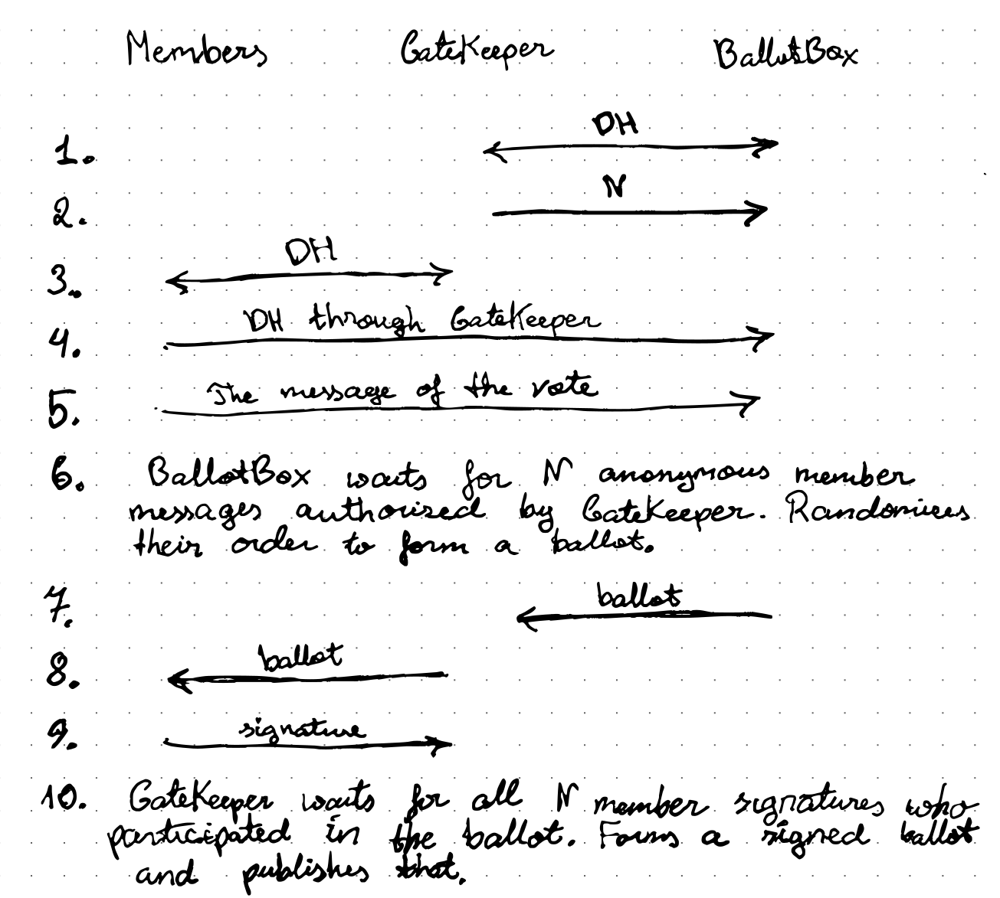

SynchronicBallot
SynchronicBallot is a secure, transparent and anonymous electronic voting solution where authority does not have chances to fake it (send me an email if you do not agree). The anonymity is protected by a knowledge that maintainers of two parts, GateKeeper and BallotBox does not trust each other and with members choice of which BallotBox to use. In the heart of the protocol is a concept of synchronicity - multiple votes happening at the same time with a common meaning.
The setup of SynchronicBallot assumes that every participant has a private/public key pair for performing electronic signatures. The public key of the participants is known to the organizer committee. A minimal setup entails two servers - one for gatekeeping responsible for authentification with the members and others for casting the votes. The trust for the system is based on the trust that the maintainers of gatekeeping and the maintainers for observers would not ever trust each other to compromise the system.
For simplicity, let's abbreviate Diffie-Hellman key exchange algorithm and establishment of a secure connection with DH. Also, let's visualize the authentification with arrows - the one-directional arrow is like HTTPS a two-directional arrow-like SSH connection.

Let's discuss each of the steps in more detail:
GateKeeper establishes a secure connection (SSH sense) with BallotBox. The reason why the connection is made secure is not because of eavesdroppers but rather to prevent undetected redirection or corruption of the data which would make the protocol fail at step 9.
The GateKeeper chooses the number of members participating in the ballot (N). Larger N gives higher anonymity but at the same time, a higher probability for failing - due to unstable connections and due to members who sabotages step 9.
Each member establishes a secure connection with GateKeeper (SSH sense). Again the secureness of the connection is to prevent undetected misdirection or data corruption. The confidentiality also excludes the unlikely ISP collaboration with BallotBox to compromise the anonymity of the votes.
Each member establishes a secure connection with BallotBox through GateKeeper (HTTPS sense). The security of the connection is necessary to prevent anyone from seeing what members voting message is. The redirection through GateKeeper has multiple advantages over the direct connection:
- It allows GateKeeper to detect whether a member had sent the voting message to the BallotBox, thus allowing to isolate points of failure.
- It allows keeping BallotBox IP address hidden thus preventing DDOS attacks to the BallotBox (unless bully has access to ISP).
- It prevents one member from voting multiple times.
- It prevents BallotBox to see the IP address of the voter.
Each member sends the message of the vote, knowing that it reaches the BallotBox confidentially. Since the secure connection was one-sided (HTTPS sense) the received message by BallotBox is anonymous (unless BallotBox collaborates with GateKeeper).
BallotBox collects all received messages and forms a ballot with a random message order. In that way, the GateKeeper does not have a way to figure out which message corresponds to which member.
BallotBox sends the ballot to GateKeeper. That allows GateKeeper to ensure that all members are receiving the same ballot.
GateKeeper sends the ballot to each of the participating members.
Each member checks that his message is in the ballot and signs it with a voting signature (the same key could be used) and is delivered back to GateKeeper. A different kind of signature (which is currently not implemented) is needed because if GateKeeper is corrupt or hacked it can feed members to sign a hash already at step 3. when Diffie-Hellman key exchange takes place.
GateKeeper receives all signatures and publishes the signed ballot.
To fake the vote of the person, one needs to gain access to his/her private key. To reveal the anonymity, both GateKeeper and BallotBox needs to be compromised. If such trust level is not enough, one can insert onion routers between GateKeeper and BallotBox or do a key braiding multiple times with different BallotBoxes each time (see next section).
The essential aspect of the protocol is that the member has the final say whether he/she would accept the ballot to be successful or not. In a way, one could imagine GateKeeper as an oracle who generates random ballot which turns out to contain members messages and so is approved by them. That is synchronic. Uses
Uses
The most fundamental use of the protocol is for performing secure, anonymous and transparent ballots. The organizing committee would define the eligible set of members and predefine the voting messages which members would use for voting (members would add a random token to make the messages unique). The members would have a choice on which BallotBoxes and GateKeepers they would trust. In the end only a signed ballot among different members matters. The trust in the anonymity of the vote lies in the knowledge of mistrust between BallotBox and GateKeepers. That requirement can be easily realized, so when maintained by enemies, persons of integrity or with a geographical distance between maintainers.
All that said SynchronicBallot is a grand scheme and can even be protected with smartcards (see PeaceCard). However, it has multiple drawbacks. First of all, anonymity depends on the number of people who are voting at the same time. Whereas success depends that connection for each member is stable and that every member would sign the ballot independent of the outcome. That would be a good breeding ground for sabotage. (one needs that losing party signs the ballot because otherwise, your choice would turn from anonymity to certainty). Fortunately, the issue can be resolved by putting public keys in the place of messages and then after every member validates the ballot on can individually sign a voting message and deliver that anonymously.
Key braiding
An exciting extension to the scheme is when one instead of voting with predefined messages one votes public keys in the ballot (in practice a hash of them). This process I call key braiding, which in the result produces a list of anonymous public keys (KeyChain). The keys at KeyChain would be eligible for voting, and with the help like a TOR, voters would be able to deliver the votes anonymously.
Further use of KeyChain is to do the braiding with SynchronicBallot again. The point of that would be to increase the level of anonymity while still keeping the convenience of having light ballots. That would allow braiding with new members and would drop the requirement for all people to be present at the same time. Furthermore, the members can repeat the process infinitely.
The KeyChain has a unique use for communications. Often we are deceived by labelling the arguments as a fight between personalities rather than between ideas. On anonymous forums and discussion places, we are deceived by paid trolls who work with multiple usernames to form an impression of public opinion.
The anonymity and linkability of the signatures made with keys from KeyCahin can give equal voice to everyone. Also, the KeyChain can prevent the organization of oppressing individuals to keep secrets against their will. It would be much easier to whistleblow for individuals who would know that their message would be heard with credibility. Whereas others would be able to vote on the message to either confirm or deny its truth. This is how the next-generation social networking developed under PeaceVote.jl is going to serve the people.
Synchronic Payments
Another compelling application for SynchronicBallots is for a payments system. The procedure would be as follows:
- The client generates a key pair.
- The client delivers the public key to the bank and puts money in it, which thus works like an account.
- The bank publishes the public key and the amount of money in it.
- The bank hosts SynchronicBallots with different nominal values for the transaction. (Let's say 5, 10, ... euros)
- To make a transaction the recipient (which could be himself) generates a key pair (or gives an existing one) and gives the public key to the recipient.
- The client performs a vote with the key from which funds should be taken and puts as a message recipient public key.
- The bank publishes the ballots which then anyone can use to calculate the funds.
The benefit of the system is that it has much lower security requirements on the bank's side is easier to maintain and scales well with the number of participants wherewith more participants the bank can offer more ballots with more nominal values. The society has the benefit to analyze the trustworthiness and usefulness of the bank for themselves.